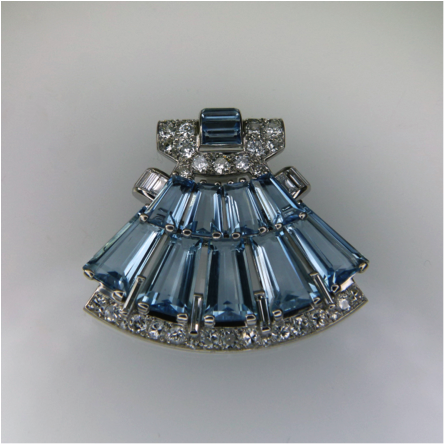
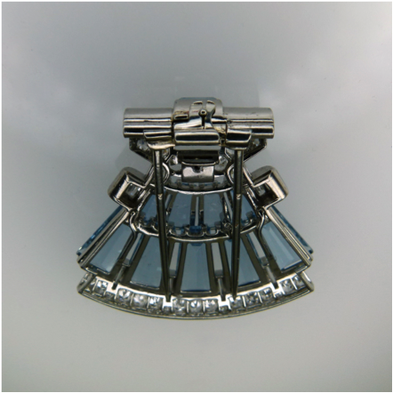

DF Walter Inc was originally founded over 30 years ago in NYC to design, develop, and produce exceptional jewelry for clients including Buccellati, Tiffany, Schlumberger and Fred Leighton, as well as independent designers.
Today we offer these same services to a private clientele, designing and producing bespoke and ready to wear jewelry by hand in the European tradition. We also offer restoration, repurposing, modification and repair.
David Walter is a Vermont based designer, goldsmith and platinumsmith who has been producing exceptional pieces of jewelry for clients since 1982.
In 1985 he founded DF Walter & Co in New York City. His earliest clients included Buccelati, Tiffany & Co., Fred Leighton, and Schlumberger, among others. David's primary focus is the design and production of one of a kind jewelry pieces on a commission basis. He also specializes in the modification and repurposing of estate jewelry, as well as restoration and repair.

Julia Ricklis began apprenticing with David Walter in 2011 to study the design and production of high jewelry. In the last 3 years, under his guidance, she has become an accomplished bench jeweler working in gold, platinum and gemstones. Julia continues to expand her knowledge of construction and fabrication techniques, gemology, design and prototyping. Promoted to Studio Director in 2014, she is involved with the daily operations of the business from gemstone and materials search through invoicing, production scheduling and marketing strategy.
Studio and Gallery
81 Main StreetBrattleboro, Vermont
(802) 722-9620 David Walter
info@dfwalter.com
Our Gallery is Open:
Wednesday through Sunday
10am to 6pm
Comments, Suggestions and Inquiries are most welcome.
We work closely with the client to establish design goals, beginning with an interview to ascertain their personal needs and desires, their personal style and taste, and preferences in material and technique.
We strive to develop a piece that will grace the wearer, and resonate with them, while creating something fresh in design and interesting to make.
After establishing design goals, we do a series of sketches, which allows us to develop design concepts and explore possibilities and refine our understanding of the client’s desires for the piece.
The next step is to produce a mock-up to solve geometry including the proportion, topography, placement of stones, and to refine the layout of the gemstones.
After the layout is approved by the client, they are presented with final design in the form of a gouache rendering.
Production takes place in our Southern Vermont studio according to the design objectives and materials chosen. Some clients like to visit their piece while it’s in production in order to deepen their understanding of our process.
Each piece we create is contemporary heirloom, to be enjoyed for generations and represents a marriage of our design aesthetic, impeccable craftsmanship, and our client’s vision.

Finished bespoke pink Sapphire and Diamond ring in Platinum
For a detailed account of the production of this piece please visit our blog at dfwalter.com/blog
The restoration process begins with an interview in order to assess the piece at hand and to ascertain the personal goals and desires of a given client. There are a unique set of challenges in restoring or modifying an existing piece as the project is entirely predicated upon the existing materials, as well as the construction and condition of the piece. Our upmost goal is to reinvent the piece so that it may best grace the wearer, while restoring it’s structural integrity. As always, we strive to exceed the customer’s expectations.
Aquamarine and Diamond brooch in Platinum 950 to convert to clasp for Akoya pearl strand.
Construction of pin back allows for removal of pin and insertion of barrel clasp
Hand fabricated barrel clasp constructed to fit into the existing pin mounting and attach to the pearl strand on either side